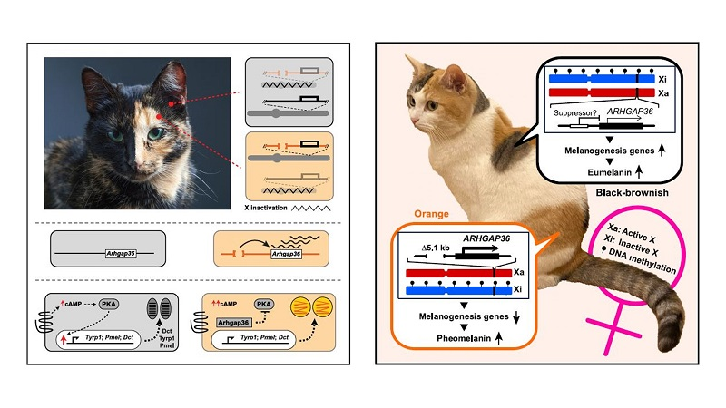

家猫颜色之谜终于揭开：为什么三花/玳瑁多是母猫？
猫咪作为宠物，其毛皮有多种颜色和花纹。橘猫（Orange）、玳瑁猫（Tortoiseshell）和三花猫（Calico）因其独特的花色深受人们喜爱。通过观察我们可以发现，绝大多数的三花猫和玳瑁猫都是雌猫，这一现象表明橙色毛皮是一种与性染色体连锁的性状。科学家早在 60 多年前就发现 X 染色体失活（X chromosome inactivation，XCI）现象并解释了玳瑁猫嵌合毛色的成因[1]，并且之后的研究将控制橘色性状的“橘色位点（orange (O) locus）”定位到 X 染色体上一段 9.7-Mb 大小的区间[2]。然而橘色性状形成的遗传机制和分子机制却一直是一个未解之谜。
2025 年 5 月 15 日两篇在《Current Biology》上背靠背发表的文章终于为我们揭晓了答案：一个名为 Arhgap36 的基因及其内含子上一段 5-kb 的缺失序列正式猫咪变成橘色的秘密所在[3][4]。

关键的 5-kb “序列缺失”
研究人员使用分子标记和全基因组测序对大量猫咪进行基因分型发现，所有橘色、玳瑁或三花猫在 X 染色体上的 Arhgap36基因区域都携带了一段长度约为 5-kb 的非编码序列缺失。这段序列虽然不直接编码蛋白质，但它像是一个精密调节的“开关”。野生型（非橘色）个体中 Arhgap36 基因在皮肤的黑色素细胞中并不表达，然而当这段 5-kb 序列缺失后，Arhgap36 基因则会在黑色素细胞中异位表达。
色素转换的“开关”
Arhgap36 是如何让黑色变成橘色的呢？Arhgap36 蛋白实际上是一种蛋白激酶 A（PKA）的抑制剂。在正常的黑色素细胞中，PKA 通路被激活后会促进 Dct、Tyrp1 等黑色素合成相关的基因表达，从而合成真黑色素（Eumelanin）。而 Arhgap36 在黑色素细胞中异常表达时则会促使 PKA 催化亚基（PKAC）降解，进而导致上述真黑色素合成基因表达水平显著降低。最终，黑色素细胞不在生成真黑色素，转而合成红黄色的褐黑素（Pheomelanin），猫咪的毛发也就变成了橘色。
为什么三花/玳瑁猫几乎全是母猫？
前面我们已经提到了一个经典的遗传学知识：X 染色体随机失活。Arhgap36 基因位于 X 染色体上。雌性猫咪拥有两条 X 染色体，但该基因是杂合状态时，在胚胎发育的早期两条 X 染色体中的一条会在不同细胞中随机失活形成异染色质，而在后期则会固定这种失活状态并通过有丝分裂传递下去。因此，在保留“橘色”X 染色体活性的细胞群中会长出橘色毛发，保留“非橘色”X 染色体活性的细胞群中则会长出黑色或褐色毛发。
这两项研究从遗传和分子层面解释了橘猫、三花或玳瑁猫中橘色毛发的形成机制。下次当你遇到一只橘猫或三花猫时，是否会想起一个序列缺失到基因调控的生物学故事。
参考文献
- LYON M. F. (1961). Gene action in the X-chromosome of the mouse (Mus musculus L.). Nature, 190, 372–373. https://doi.org/10.1038/190372a0 ↩
- Schmidt-Küntzel, A., Nelson, G., David, V. A., Schäffer, A. A., Eizirik, E., Roelke, M. E., Kehler, J. S., Hannah, S. S., O’Brien, S. J., & Menotti-Raymond, M. (2009). A domestic cat X chromosome linkage map and the sex-linked orange locus: mapping of orange, multiple origins and epistasis over nonagouti. Genetics, 181(4), 1415–1425. https://doi.org/10.1534/genetics.108.095240 ↩
- Toh, H., Au Yeung, W. K., Unoki, M., Matsumoto, Y., Miki, Y., Matsumura, Y., Baba, Y., Sado, T., Nakamura, Y., Matsuda, M., & Sasaki, H. (2025). A deletion at the X-linked ARHGAP36 gene locus is associated with the orange coloration of tortoiseshell and calico cats. Current biology : CB, 35(12), 2816–2825.e3. https://doi.org/10.1016/j.cub.2025.03.075 ↩
- Kaelin, C. B., McGowan, K. A., Trotman, J. C., Koroma, D. C., David, V. A., Menotti-Raymond, M., Graff, E. C., Schmidt-Küntzel, A., Oancea, E., & Barsh, G. S. (2025). Molecular and genetic characterization of sex-linked orange coat color in the domestic cat. Current biology : CB, 35(12), 2826–2836.e5. https://doi.org/10.1016/j.cub.2025.04.055 ↩